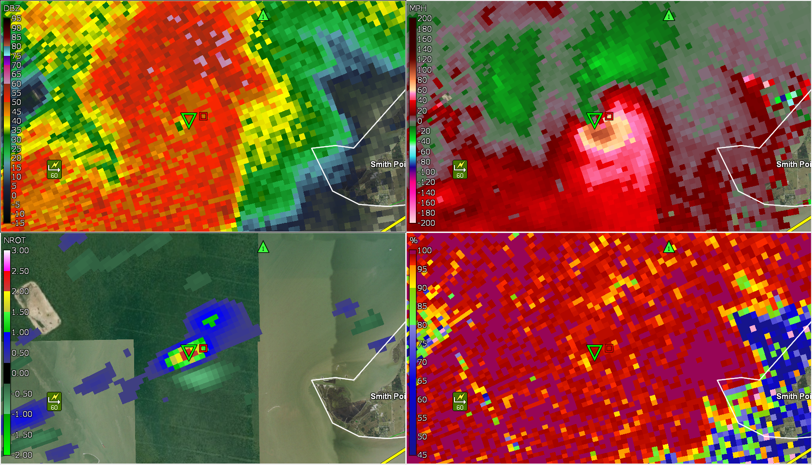
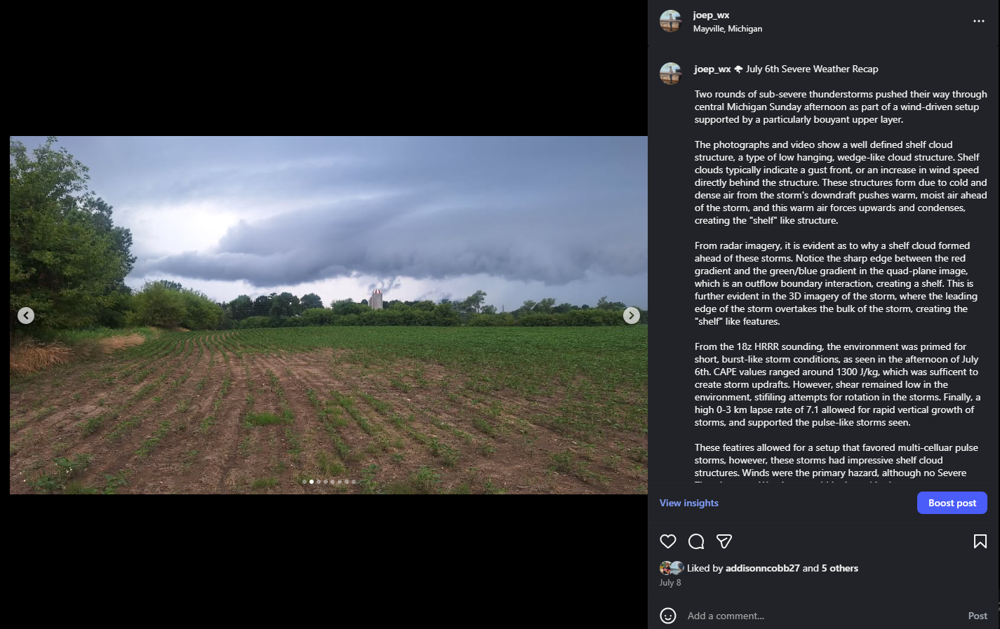
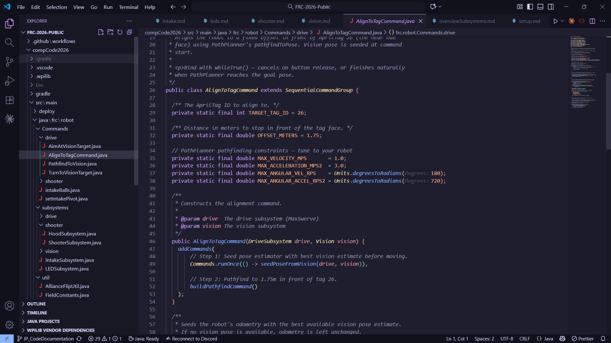
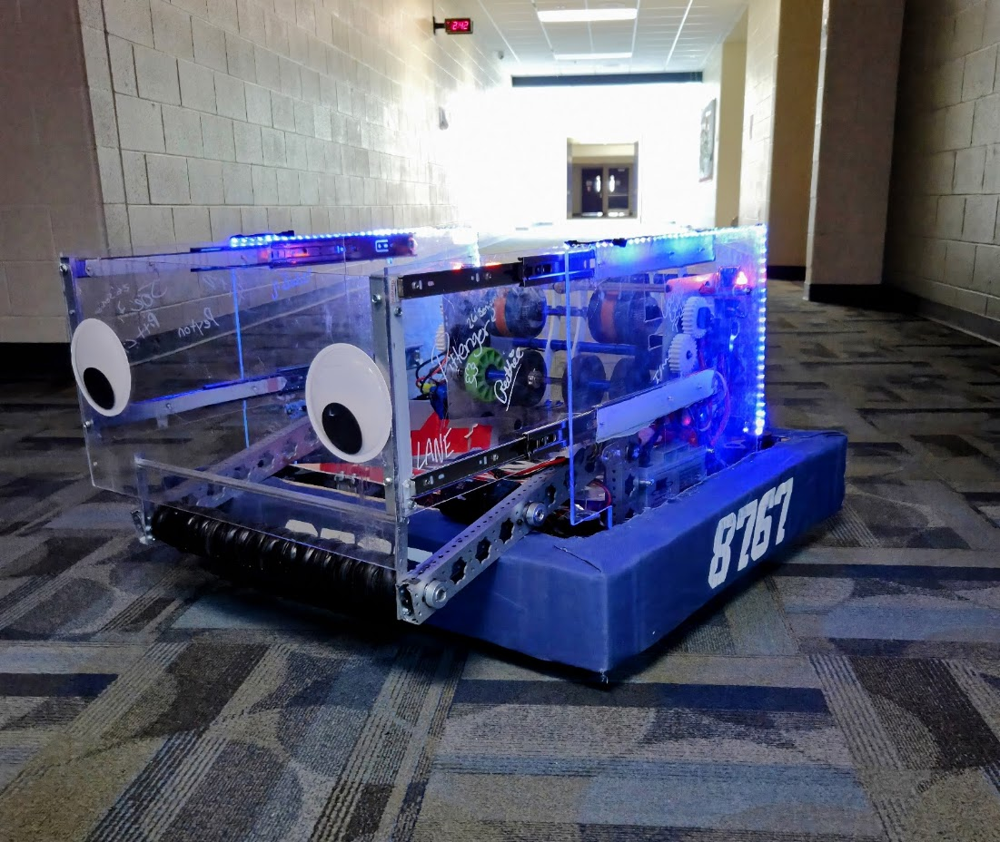
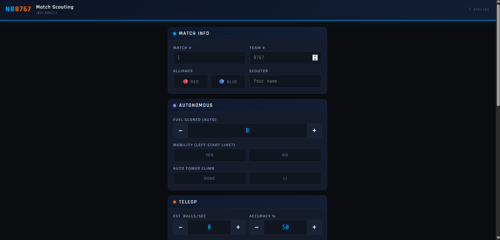

On-Board Radar Visualization
Using JavaScript and static HTML to display a real-time radar visualization on an interactive map.
View on GitHub →Meteorology

Using JavaScript and static HTML to display a real-time radar visualization on an interactive map.
View on GitHub →
Built a following on Instagram and Snapchat to distribute NWS-based severe weather alerts to the local community ahead of significant weather events.
@joep_wx on Instagram →Robotics

Sole programmer for FRC Team 8767 across multiple seasons. 2026 robot features MaxSwerve drive, dual flywheel shooter, slapdown intake, PhotonVision AprilTag alignment, and a full LED subsystem. Team made playoffs for the first time in 2026.
View 2026 codebase →
Worked alongside the team on mechanical prototypes and final robot construction across multiple seasons, from intake concepts to drivetrain assembly.
View photos →
Designed and built a basic python app with scripts for data collection and analysis.
View on GitHub →